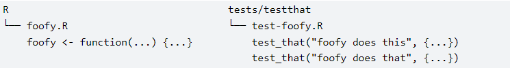
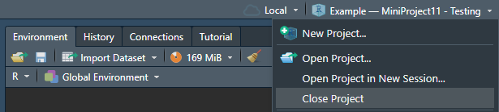

library(testthat)
# wrangle_data 함수 생성
wrangle_data <- function(data) {
adsl_data <- adsl_data %>%
filter(SAFFL == "Y") %>%
select("STUDYID", "USUBJID", "SEX", "TRT01A", "TRT01AN", "SAFFL")
return(adsl_data)
}11 테스트
{testthat}은 이 프로젝트에서 사용할 새로운 패키지입니다. 이 연습을 시작하기 전에 설치하십시오.
11.1 소개
이 미니 프로젝트에서는 R에서 코드를 테스트하는 방법을 살펴봅니다. 코드를 테스트하는 것은 고통스럽고 지루할 수 있지만 코드의 품질을 크게 향상시킵니다. 코드가 원하는 대로 작동하는지 확인하는 동시에 테스트 설명서를 제공합니다.
11.2 테스트의 이점
R에서 함수를 개발하는 동안 프로그래머는 일반적으로 비공식적인 테스트를 수행합니다. 함수를 작성한 후에는 데이터 세트에서 실행하고 결과를 예상과 비교하여 콘솔에서 테스트할 가능성이 높습니다. 이 접근 방식은 코드를 개발하는 동안 비공식적인 테스트에 좋지만 한두 달 후에 코드에 새로운 기능을 추가해야 하고 수행한 테스트 기록이 없는 경우 문제가 됩니다. 이렇게 하면 작동하던 코드를 쉽게 깨뜨릴 수 있습니다.
보다 공식적인 QC 프로세스는 어떻습니까? R 코드를 작성한 후에는 동료에게 생성한 함수를 독립적으로 QC하여 몇 가지 예제로 테스트하여 올바른지 확인하도록 요청할 수 있습니다. 이 접근 방식은 유효하며 작업을 완료하지만 몇 가지 질문이 있습니다:
인간 검토자가 없는 경우 코드가 예상대로 작동하는지 어떻게 확인하시겠습니까?
나중에 코드의 다른 부분에 대한 변경 사항이 이미 QC 및 테스트된 코드에 영향을 미치지 않았는지 어떻게 확인하시겠습니까?
검토자는 테스트를 어떻게 문서화해야 합니까?
이러한 모든 질문은 자동화된 테스트(자동화된 단위 테스트라고도 함)로 해결할 수 있습니다. 단위 테스트를 통해 코드 단위의 올바른 동작을 확인할 수 있으며, 이는 R의 맥락에서 함수의 올바른 동작으로 변환됩니다.
자동화된 단위 테스트의 장점:
시간과 노력을 절약하고 디버깅에 도움이 됩니다.
인간 검토자가 없는 경우 코드가 예상대로 작동하는지 확인하는 데 도움이 됩니다.
코드의 일부가 변경될 때마다 테스트를 다시 실행하여 새 코드가 이전에 설정된 기능 및 기대치에 영향을 미치지 않았는지 확인할 수 있습니다.
테스트 자체는 코드에 대한 설명서를 제공합니다.
… 그리고 테스트 가능한 코드를 작성하도록 강요하여 전체 코드 설계를 개선합니다.
11.3 테스트 가능한 코드 작성
테스트를 작성하는 데 어려움을 겪고 있다면 문제가 함수 설계에 있을 수 있다는 힌트로 받아들이십시오. 좋은 함수는 수행하는 하나의 주요 작업이 있으며 그런 다음 테스트됩니다.
MiniProject7에서는 좋은 함수는 읽고, 검토하고, 개선하기 쉬워야 한다고 논의했습니다. 수행하는 하나의 주요 작업이 있는 함수를 테스트하고 디버깅하는 것도 더 쉽습니다. MiniProject7의 6. 검토 및 리팩토링. 자주. 섹션에서 우리 함수가 데이터 위치 경로를 가져와 SAS 데이터셋을 읽는 것부터 테이블 내용을 생성하는 것까지 모든 것을 수행했던 것을 기억하십니까? 이러한 함수는 데이터를 읽고 정리하는 두 가지 작업을 수행하기 때문에 테스트하기가 더 어려울 것입니다. 해당 연습에서는 함수 외부에서 읽은 데이터를 사용하여 요약된 개수만 생성하도록 함수를 업데이트한 후 상황을 단순화할 수 있었습니다. 이렇게 하면 함수의 속도가 향상되고 테스트에 더 적합해졌습니다.
11.4 {testthat}을 사용한 자동화된 테스트
{testthat}은 R에서 가장 인기 있는 단위 테스트 패키지이며 주로 R 패키지를 테스트하는 데 사용되지만 패키지로 래핑하고 싶지 않더라도 자체 코드를 개발할 때 깔끔한 기능을 사용할 수 있습니다.
11.5 기대치
기대치는 가장 세분화된 테스트 수준이며 함수에서 반환된 값이 우리가 얻어야 하는 값과 일치하는지 확인할 수 있습니다. 계산의 예상 결과를 설명합니다. 올바른 값과 올바른 클래스가 있습니까? 그래야 할 때 오류가 발생합니까? 기대치는 콘솔에서 결과의 시각적 확인을 자동화합니다. 기대치는 expect_로 시작하는 함수입니다.
개발자는 유효한 입력, 유효하지 않은 입력, 오류, 예외, 이벤트 및 깨질 가능성이 있는 모든 것을 테스트해야 합니다.
{testthat} 패키지에는 많은 기대치 함수가 있습니다. 그들이 답하는 질문의 예는 다음과 같습니다:
코드가 예상 값을 반환합니까?
expect_equal()expect_identical()코드가 지정된 길이의 벡터를 반환합니까? expect_length()
코드가 예상 값보다 크거나 작은 숫자를 반환합니까?
expect_lt()expect_lte()expect_gt()expect_gte()코드가
TRUE또는FALSE를 반환합니까?expect_true()expect_false()코드가 오류, 경고, 메시지 또는 기타 조건을 발생시킵니까?
expect_error()expect_warning()expect_message()expect_condition()
…그리고 훨씬 더 많습니다!
테스트는 매우 광범위한 주제이며 이 미니 프로젝트에서 모든 것을 다룰 수는 없습니다. 주요 목표는 테스트의 아이디어를 파악하고 {testthat} 패키지에 익숙해지는 것입니다.
11.6 테스트 가능한 코드 작성 - 예제
이제 테스트의 이점을 논의하고 {testthat} 패키지에 대해 배웠으므로 오늘 작업할 몇 가지 함수를 살펴보겠습니다. 테스트할 첫 번째 함수는 wrangle_data() 함수입니다. 하나의 인수(데이터)를 사용합니다. 그런 다음 데이터를 로드, 필터링 및 부분집합으로 만들고 adsl_data 객체를 반환합니다.
이제 미니 프로젝트 7에서 작업했던 adsl_counts() 함수(단순화된 버전)를 살펴보겠습니다. 이 함수는 wrangle_data() 함수의 출력을 가져와 입력으로 사용합니다. adsl_counts 함수가 몇 가지 작업을 수행한다는 점에 유의하십시오:
먼저 치료 그룹별 발생 횟수 총계를 담는
Big_N_cnt객체를 만듭니다.그런 다음 치료 그룹 및 성별별 발생 횟수 총계를 담는
small_n_cnt객체를 만듭니다.그런 다음
Big_N_cnt및small_n_cnt를 활용하여 이 두 객체를 사용하여 백분율을 계산하는adsl_mrg_cnttibble을 만듭니다.
adsl_counts <- function(adsl_data) {
Big_N_cnt <- adsl_data %>%
group_by( TRT01AN, TRT01A ) %>%
count(name = "N")
Big_N_cnt
small_n_cnt <- adsl_data %>%
group_by( TRT01AN, TRT01A, SEX ) %>%
count(name = "n")
small_n_cnt
adsl_mrg_cnt <- small_n_cnt %>%
left_join(Big_N_cnt, by = c("TRT01A", "TRT01AN")) %>%
mutate(perc = round((n/N)*100, digits=1)) %>%
ungroup() %>%
select(TRT01A, SEX, perc)
adsl_mrg_cnt
}이러한 함수는 함수 내부에 종속성이 있기 때문에 디버깅하고 테스트하기가 더 어려울 수 있습니다. 예를 들어 small_n_cnt 또는 Big_N_cnt가 계산되지 않거나 예기치 않은 결과를 생성하면 adsl_mrg_cnt 단계가 실패합니다.
이를 염두에 두고 큰 함수를 세 개의 작은 함수로 나누어 각각을 개별적으로 테스트할 수 있도록 하겠습니다. 이러한 함수를 calculate_Big_N_cnt, calculate_small_n_cnt 및 adsl_counts라고 부르겠습니다.
먼저 adsl_data 인수를 사용하고 Big_N_cnt를 반환하는 calculate_Big_N_cnt 함수를 만듭니다.
calculate_Big_N_cnt <- function(adsl_data) {
Big_N_cnt <- adsl_data %>%
group_by( TRT01AN, TRT01A ) %>%
count(name = "N")
return(Big_N_cnt)
}이제 아래 코드 줄을 adsl_data 인수를 사용하는 calculate_small_n_cnt 함수로 바꾸는 코드를 추가하십시오. small_n_cnt를 return()하는 것을 잊지 마십시오.
calculate_small_n_cnt <- function(adsl_data) {
small_n_cnt <- adsl_data %>%
group_by(TRT01AN, TRT01A, SEX) %>%
count(name = "n", .groups = 'drop') # 좋은 습관을 위해 .groups = 'drop' 추가
return(small_n_cnt)
}이제 아래 코드를 adsl_counts 함수로 변환해 보겠습니다. 이 함수는 위 두 함수의 출력을 인수로 사용한다는 것을 기억하십시오.
adsl_counts <- function(small_n_cnt, Big_N_cnt) {
adsl_mrg_cnt <- small_n_cnt %>%
left_join(Big_N_cnt, by = c("TRT01A", "TRT01AN")) %>%
mutate(perc = round((n/N)*100, digits=1)) %>%
ungroup() %>%
select(TRT01A, SEX, perc)
return(adsl_mrg_cnt)
}11.7 테스트 작성
이제 함수를 테스트해 보겠습니다! 위에서 설명한 expect_ 함수를 사용하여 테스트를 지원할 것입니다. 함수의 입력, 출력 데이터를 테스트하고 함수가 수행하는 계산이 올바른지 확인할 것입니다.
먼저 wrangle_data() 함수에 대한 몇 가지 테스트를 작성해 보겠습니다. 테스트 데이터로는 PHUSE 조직에서 게시한 CDISC ADaM 데이터를 사용할 것입니다(adsl_data는 이미 환경에 로드되어 있습니다). 경험상 프로덕션 코드를 실행하는 데 사용하는 데이터와 다른 데이터를 테스트에 사용하는 것이 좋습니다. 데이터도 잘 제어되어야 합니다. 이 경우 ADSL 데이터 형식은 신뢰할 수 있는 출처에서 온 표준화된 형식입니다. wrangle_data() 함수는 몇 가지 변환(데이터를 필터링하고 부분집합으로 만듦)을 수행하며 예기치 않은 출력을 테스트하려고 합니다.
특정 테스트에서는 특정 기능을 테스트하기 위해 추가 테스트 데이터를 만들어야 하지만, 거기에 도달하면 이에 대해 논의할 것입니다.
데이터를 살펴보겠습니다.
#PHUSE 데이터 읽기
phuse_data <- rio::import("./data/adsl.xpt")
head(phuse_data) STUDYID USUBJID SUBJID SITEID SITEGR1 ARM
1 CDISCPILOT01 01-701-1015 1015 701 701 Placebo
2 CDISCPILOT01 01-701-1023 1023 701 701 Placebo
3 CDISCPILOT01 01-701-1028 1028 701 701 Xanomeline High Dose
4 CDISCPILOT01 01-701-1033 1033 701 701 Xanomeline Low Dose
5 CDISCPILOT01 01-701-1034 1034 701 701 Xanomeline High Dose
6 CDISCPILOT01 01-701-1047 1047 701 701 Placebo
TRT01P TRT01PN TRT01A TRT01AN TRTSDT
1 Placebo 0 Placebo 0 2014-01-02
2 Placebo 0 Placebo 0 2012-08-05
3 Xanomeline High Dose 81 Xanomeline High Dose 81 2013-07-19
4 Xanomeline Low Dose 54 Xanomeline Low Dose 54 2014-03-18
5 Xanomeline High Dose 81 Xanomeline High Dose 81 2014-07-01
6 Placebo 0 Placebo 0 2013-02-12
TRTEDT TRTDUR AVGDD CUMDOSE AGE AGEGR1 AGEGR1N AGEU RACE RACEN SEX
1 2014-07-02 182 0.0 0 63 <65 1 YEARS WHITE 1 F
2 2012-09-01 28 0.0 0 64 <65 1 YEARS WHITE 1 M
3 2014-01-14 180 77.7 13986 71 65-80 2 YEARS WHITE 1 M
4 2014-03-31 14 54.0 756 74 65-80 2 YEARS WHITE 1 M
5 2014-12-30 183 76.9 14067 77 65-80 2 YEARS WHITE 1 F
6 2013-03-09 26 0.0 0 85 >80 3 YEARS WHITE 1 F
ETHNIC SAFFL ITTFL EFFFL COMP8FL COMP16FL COMP24FL DISCONFL
1 HISPANIC OR LATINO Y Y Y Y Y Y
2 HISPANIC OR LATINO Y Y Y N N N Y
3 NOT HISPANIC OR LATINO Y Y Y Y Y Y
4 NOT HISPANIC OR LATINO Y Y Y N N N Y
5 NOT HISPANIC OR LATINO Y Y Y Y Y Y
6 NOT HISPANIC OR LATINO Y Y Y N N N Y
DSRAEFL DTHFL BMIBL BMIBLGR1 HEIGHTBL WEIGHTBL EDUCLVL DISONSDT DURDIS
1 25.1 25-<30 147.3 54.4 16 2010-04-30 43.9
2 Y 30.4 >=30 162.6 80.3 14 2006-03-11 76.4
3 31.4 >=30 177.8 99.3 16 2009-12-16 42.8
4 28.8 25-<30 175.3 88.5 12 2009-08-02 55.3
5 26.1 25-<30 154.9 62.6 9 2011-09-29 32.9
6 Y 30.4 >=30 148.6 67.1 8 2009-07-26 42.0
DURDSGR1 VISIT1DT RFSTDTC RFENDTC VISNUMEN RFENDT
1 >=12 2013-12-26 2014-01-02 2014-07-02 12 2014-07-02
2 >=12 2012-07-22 2012-08-05 2012-09-02 5 2012-09-02
3 >=12 2013-07-11 2013-07-19 2014-01-14 12 2014-01-14
4 >=12 2014-03-10 2014-03-18 2014-04-14 5 2014-04-14
5 >=12 2014-06-24 2014-07-01 2014-12-30 12 2014-12-30
6 >=12 2013-01-22 2013-02-12 2013-03-29 6 2013-03-29
DCDECOD DCREASCD MMSETOT
1 COMPLETED Completed 23
2 ADVERSE EVENT Adverse Event 23
3 COMPLETED Completed 23
4 STUDY TERMINATED BY SPONSOR Sponsor Decision 23
5 COMPLETED Completed 21
6 ADVERSE EVENT Adverse Event 23이제 데이터에 적용했을 때 함수의 출력을 살펴보겠습니다.
# wrange 데이터 함수 생성
wrangle_data <- function(adsl_data) {
adsl_data <- adsl_data %>%
filter(SAFFL == "Y") %>%
select("STUDYID", "USUBJID", "SEX", "TRT01A", "TRT01AN", "SAFFL")
return(adsl_data)
}
adsl_data <- wrangle_data(phuse_data)
adsl_data STUDYID USUBJID SEX TRT01A TRT01AN SAFFL
1 CDISCPILOT01 01-701-1015 F Placebo 0 Y
2 CDISCPILOT01 01-701-1023 M Placebo 0 Y
3 CDISCPILOT01 01-701-1028 M Xanomeline High Dose 81 Y
4 CDISCPILOT01 01-701-1033 M Xanomeline Low Dose 54 Y
5 CDISCPILOT01 01-701-1034 F Xanomeline High Dose 81 Y
6 CDISCPILOT01 01-701-1047 F Placebo 0 Y
7 CDISCPILOT01 01-701-1097 M Xanomeline Low Dose 54 Y
8 CDISCPILOT01 01-701-1111 F Xanomeline Low Dose 54 Y
9 CDISCPILOT01 01-701-1115 M Xanomeline Low Dose 54 Y
10 CDISCPILOT01 01-701-1118 M Placebo 0 Y
11 CDISCPILOT01 01-701-1130 M Placebo 0 Y
12 CDISCPILOT01 01-701-1133 F Xanomeline High Dose 81 Y
13 CDISCPILOT01 01-701-1146 F Xanomeline High Dose 81 Y
14 CDISCPILOT01 01-701-1148 M Xanomeline High Dose 81 Y
15 CDISCPILOT01 01-701-1153 F Placebo 0 Y
16 CDISCPILOT01 01-701-1180 M Xanomeline High Dose 81 Y
17 CDISCPILOT01 01-701-1181 F Xanomeline High Dose 81 Y
18 CDISCPILOT01 01-701-1188 M Xanomeline Low Dose 54 Y
19 CDISCPILOT01 01-701-1192 F Xanomeline Low Dose 54 Y
20 CDISCPILOT01 01-701-1203 F Placebo 0 Y
21 CDISCPILOT01 01-701-1211 F Xanomeline Low Dose 54 Y
22 CDISCPILOT01 01-701-1234 M Placebo 0 Y
23 CDISCPILOT01 01-701-1239 M Xanomeline High Dose 81 Y
24 CDISCPILOT01 01-701-1275 M Xanomeline High Dose 81 Y
25 CDISCPILOT01 01-701-1287 F Xanomeline High Dose 81 Y
26 CDISCPILOT01 01-701-1294 M Xanomeline Low Dose 54 Y
27 CDISCPILOT01 01-701-1302 M Xanomeline High Dose 81 Y
28 CDISCPILOT01 01-701-1317 M Xanomeline Low Dose 54 Y
29 CDISCPILOT01 01-701-1324 M Xanomeline Low Dose 54 Y
30 CDISCPILOT01 01-701-1341 M Xanomeline Low Dose 54 Y
31 CDISCPILOT01 01-701-1345 F Placebo 0 Y
32 CDISCPILOT01 01-701-1360 M Xanomeline High Dose 81 Y
33 CDISCPILOT01 01-701-1363 F Placebo 0 Y
34 CDISCPILOT01 01-701-1383 F Xanomeline High Dose 81 Y
35 CDISCPILOT01 01-701-1387 F Placebo 0 Y
36 CDISCPILOT01 01-701-1392 M Placebo 0 Y
37 CDISCPILOT01 01-701-1415 M Placebo 0 Y
38 CDISCPILOT01 01-701-1429 F Xanomeline Low Dose 54 Y
39 CDISCPILOT01 01-701-1440 M Placebo 0 Y
40 CDISCPILOT01 01-701-1442 F Xanomeline Low Dose 54 Y
41 CDISCPILOT01 01-701-1444 M Xanomeline High Dose 81 Y
42 CDISCPILOT01 01-702-1082 F Xanomeline Low Dose 54 Y
43 CDISCPILOT01 01-703-1042 M Placebo 0 Y
44 CDISCPILOT01 01-703-1076 M Xanomeline High Dose 81 Y
45 CDISCPILOT01 01-703-1086 M Xanomeline Low Dose 54 Y
46 CDISCPILOT01 01-703-1096 F Placebo 0 Y
47 CDISCPILOT01 01-703-1100 F Placebo 0 Y
48 CDISCPILOT01 01-703-1119 F Xanomeline Low Dose 54 Y
49 CDISCPILOT01 01-703-1175 M Placebo 0 Y
50 CDISCPILOT01 01-703-1182 M Xanomeline Low Dose 54 Y
51 CDISCPILOT01 01-703-1197 F Xanomeline Low Dose 54 Y
52 CDISCPILOT01 01-703-1210 F Placebo 0 Y
53 CDISCPILOT01 01-703-1258 F Xanomeline High Dose 81 Y
54 CDISCPILOT01 01-703-1279 F Xanomeline Low Dose 54 Y
55 CDISCPILOT01 01-703-1295 F Xanomeline High Dose 81 Y
56 CDISCPILOT01 01-703-1299 F Placebo 0 Y
57 CDISCPILOT01 01-703-1335 F Xanomeline High Dose 81 Y
58 CDISCPILOT01 01-703-1379 F Xanomeline Low Dose 54 Y
59 CDISCPILOT01 01-703-1403 M Xanomeline High Dose 81 Y
60 CDISCPILOT01 01-703-1439 F Xanomeline High Dose 81 Y
61 CDISCPILOT01 01-704-1008 F Xanomeline High Dose 81 Y
62 CDISCPILOT01 01-704-1009 M Xanomeline Low Dose 54 Y
63 CDISCPILOT01 01-704-1010 M Placebo 0 Y
64 CDISCPILOT01 01-704-1017 M Xanomeline High Dose 81 Y
65 CDISCPILOT01 01-704-1025 F Xanomeline Low Dose 54 Y
66 CDISCPILOT01 01-704-1065 M Xanomeline High Dose 81 Y
67 CDISCPILOT01 01-704-1074 F Xanomeline High Dose 81 Y
68 CDISCPILOT01 01-704-1093 M Xanomeline High Dose 81 Y
69 CDISCPILOT01 01-704-1114 M Xanomeline Low Dose 54 Y
70 CDISCPILOT01 01-704-1120 F Xanomeline Low Dose 54 Y
71 CDISCPILOT01 01-704-1127 F Placebo 0 Y
72 CDISCPILOT01 01-704-1135 F Xanomeline Low Dose 54 Y
73 CDISCPILOT01 01-704-1164 F Placebo 0 Y
74 CDISCPILOT01 01-704-1218 F Xanomeline Low Dose 54 Y
75 CDISCPILOT01 01-704-1233 F Placebo 0 Y
76 CDISCPILOT01 01-704-1241 M Xanomeline High Dose 81 Y
77 CDISCPILOT01 01-704-1260 F Placebo 0 Y
78 CDISCPILOT01 01-704-1266 M Xanomeline High Dose 81 Y
79 CDISCPILOT01 01-704-1323 F Xanomeline Low Dose 54 Y
80 CDISCPILOT01 01-704-1325 M Xanomeline Low Dose 54 Y
81 CDISCPILOT01 01-704-1332 M Xanomeline High Dose 81 Y
82 CDISCPILOT01 01-704-1351 M Placebo 0 Y
83 CDISCPILOT01 01-704-1388 M Placebo 0 Y
84 CDISCPILOT01 01-704-1435 M Placebo 0 Y
85 CDISCPILOT01 01-704-1445 M Placebo 0 Y
86 CDISCPILOT01 01-705-1018 F Placebo 0 Y
87 CDISCPILOT01 01-705-1031 F Xanomeline Low Dose 54 Y
88 CDISCPILOT01 01-705-1059 F Placebo 0 Y
89 CDISCPILOT01 01-705-1186 F Placebo 0 Y
90 CDISCPILOT01 01-705-1199 M Xanomeline Low Dose 54 Y
91 CDISCPILOT01 01-705-1280 F Xanomeline High Dose 81 Y
92 CDISCPILOT01 01-705-1281 F Xanomeline High Dose 81 Y
93 CDISCPILOT01 01-705-1282 F Placebo 0 Y
94 CDISCPILOT01 01-705-1292 F Xanomeline Low Dose 54 Y
95 CDISCPILOT01 01-705-1303 M Xanomeline High Dose 81 Y
96 CDISCPILOT01 01-705-1310 F Xanomeline High Dose 81 Y
97 CDISCPILOT01 01-705-1349 F Placebo 0 Y
98 CDISCPILOT01 01-705-1377 F Xanomeline High Dose 81 Y
99 CDISCPILOT01 01-705-1382 M Xanomeline High Dose 81 Y
100 CDISCPILOT01 01-705-1393 F Xanomeline Low Dose 54 Y
101 CDISCPILOT01 01-705-1431 F Xanomeline Low Dose 54 Y
102 CDISCPILOT01 01-706-1041 F Placebo 0 Y
103 CDISCPILOT01 01-706-1049 F Xanomeline High Dose 81 Y
104 CDISCPILOT01 01-706-1384 F Xanomeline Low Dose 54 Y
105 CDISCPILOT01 01-707-1037 F Xanomeline Low Dose 54 Y
106 CDISCPILOT01 01-707-1206 M Placebo 0 Y
107 CDISCPILOT01 01-708-1019 M Xanomeline Low Dose 54 Y
108 CDISCPILOT01 01-708-1032 M Xanomeline Low Dose 54 Y
109 CDISCPILOT01 01-708-1084 F Xanomeline Low Dose 54 Y
110 CDISCPILOT01 01-708-1087 F Placebo 0 Y
111 CDISCPILOT01 01-708-1158 F Placebo 0 Y
112 CDISCPILOT01 01-708-1171 F Placebo 0 Y
113 CDISCPILOT01 01-708-1178 F Xanomeline High Dose 81 Y
114 CDISCPILOT01 01-708-1213 F Xanomeline High Dose 81 Y
115 CDISCPILOT01 01-708-1216 M Xanomeline High Dose 81 Y
116 CDISCPILOT01 01-708-1236 F Xanomeline High Dose 81 Y
117 CDISCPILOT01 01-708-1253 M Placebo 0 Y
118 CDISCPILOT01 01-708-1272 M Xanomeline Low Dose 54 Y
119 CDISCPILOT01 01-708-1286 F Placebo 0 Y
120 CDISCPILOT01 01-708-1296 M Placebo 0 Y
121 CDISCPILOT01 01-708-1297 M Xanomeline Low Dose 54 Y
122 CDISCPILOT01 01-708-1316 F Placebo 0 Y
123 CDISCPILOT01 01-708-1336 M Xanomeline High Dose 81 Y
124 CDISCPILOT01 01-708-1342 F Placebo 0 Y
125 CDISCPILOT01 01-708-1347 F Xanomeline High Dose 81 Y
126 CDISCPILOT01 01-708-1348 F Xanomeline Low Dose 54 Y
127 CDISCPILOT01 01-708-1353 F Xanomeline Low Dose 54 Y
128 CDISCPILOT01 01-708-1372 M Xanomeline High Dose 81 Y
129 CDISCPILOT01 01-708-1378 M Placebo 0 Y
130 CDISCPILOT01 01-708-1406 F Xanomeline High Dose 81 Y
131 CDISCPILOT01 01-708-1428 F Xanomeline Low Dose 54 Y
132 CDISCPILOT01 01-709-1001 F Placebo 0 Y
133 CDISCPILOT01 01-709-1007 F Xanomeline Low Dose 54 Y
134 CDISCPILOT01 01-709-1020 F Xanomeline Low Dose 54 Y
135 CDISCPILOT01 01-709-1029 M Xanomeline High Dose 81 Y
136 CDISCPILOT01 01-709-1081 F Xanomeline Low Dose 54 Y
137 CDISCPILOT01 01-709-1088 M Placebo 0 Y
138 CDISCPILOT01 01-709-1099 F Xanomeline High Dose 81 Y
139 CDISCPILOT01 01-709-1102 F Xanomeline Low Dose 54 Y
140 CDISCPILOT01 01-709-1168 F Xanomeline High Dose 81 Y
141 CDISCPILOT01 01-709-1217 M Xanomeline Low Dose 54 Y
142 CDISCPILOT01 01-709-1238 M Xanomeline High Dose 81 Y
143 CDISCPILOT01 01-709-1259 M Placebo 0 Y
144 CDISCPILOT01 01-709-1285 M Xanomeline Low Dose 54 Y
145 CDISCPILOT01 01-709-1301 F Placebo 0 Y
146 CDISCPILOT01 01-709-1306 F Placebo 0 Y
147 CDISCPILOT01 01-709-1309 M Xanomeline High Dose 81 Y
148 CDISCPILOT01 01-709-1312 F Placebo 0 Y
149 CDISCPILOT01 01-709-1326 F Xanomeline Low Dose 54 Y
150 CDISCPILOT01 01-709-1329 M Xanomeline High Dose 81 Y
151 CDISCPILOT01 01-709-1339 M Placebo 0 Y
152 CDISCPILOT01 01-709-1424 M Xanomeline High Dose 81 Y
153 CDISCPILOT01 01-710-1002 M Xanomeline Low Dose 54 Y
154 CDISCPILOT01 01-710-1006 M Xanomeline High Dose 81 Y
155 CDISCPILOT01 01-710-1021 M Xanomeline High Dose 81 Y
156 CDISCPILOT01 01-710-1027 M Placebo 0 Y
157 CDISCPILOT01 01-710-1045 F Xanomeline Low Dose 54 Y
158 CDISCPILOT01 01-710-1053 F Xanomeline Low Dose 54 Y
159 CDISCPILOT01 01-710-1060 M Placebo 0 Y
160 CDISCPILOT01 01-710-1070 F Xanomeline High Dose 81 Y
161 CDISCPILOT01 01-710-1077 F Placebo 0 Y
162 CDISCPILOT01 01-710-1078 F Placebo 0 Y
163 CDISCPILOT01 01-710-1083 F Placebo 0 Y
164 CDISCPILOT01 01-710-1137 F Xanomeline High Dose 81 Y
165 CDISCPILOT01 01-710-1142 F Xanomeline High Dose 81 Y
166 CDISCPILOT01 01-710-1154 M Xanomeline Low Dose 54 Y
167 CDISCPILOT01 01-710-1166 F Xanomeline Low Dose 54 Y
168 CDISCPILOT01 01-710-1183 F Placebo 0 Y
169 CDISCPILOT01 01-710-1187 F Xanomeline High Dose 81 Y
170 CDISCPILOT01 01-710-1235 F Xanomeline Low Dose 54 Y
171 CDISCPILOT01 01-710-1249 M Xanomeline High Dose 81 Y
172 CDISCPILOT01 01-710-1264 M Placebo 0 Y
173 CDISCPILOT01 01-710-1270 F Xanomeline Low Dose 54 Y
174 CDISCPILOT01 01-710-1271 F Placebo 0 Y
175 CDISCPILOT01 01-710-1278 M Xanomeline High Dose 81 Y
176 CDISCPILOT01 01-710-1300 F Xanomeline Low Dose 54 Y
177 CDISCPILOT01 01-710-1314 F Placebo 0 Y
178 CDISCPILOT01 01-710-1315 F Placebo 0 Y
179 CDISCPILOT01 01-710-1354 M Xanomeline High Dose 81 Y
180 CDISCPILOT01 01-710-1358 M Xanomeline Low Dose 54 Y
181 CDISCPILOT01 01-710-1368 F Placebo 0 Y
182 CDISCPILOT01 01-710-1385 M Xanomeline Low Dose 54 Y
183 CDISCPILOT01 01-710-1408 M Xanomeline High Dose 81 Y
184 CDISCPILOT01 01-711-1012 F Xanomeline High Dose 81 Y
185 CDISCPILOT01 01-711-1036 M Placebo 0 Y
186 CDISCPILOT01 01-711-1143 F Xanomeline Low Dose 54 Y
187 CDISCPILOT01 01-711-1433 F Xanomeline High Dose 81 Y
188 CDISCPILOT01 01-713-1043 F Xanomeline Low Dose 54 Y
189 CDISCPILOT01 01-713-1073 F Xanomeline Low Dose 54 Y
190 CDISCPILOT01 01-713-1106 M Xanomeline High Dose 81 Y
191 CDISCPILOT01 01-713-1141 M Xanomeline High Dose 81 Y
192 CDISCPILOT01 01-713-1179 F Placebo 0 Y
193 CDISCPILOT01 01-713-1209 F Xanomeline High Dose 81 Y
194 CDISCPILOT01 01-713-1256 M Placebo 0 Y
195 CDISCPILOT01 01-713-1269 M Placebo 0 Y
196 CDISCPILOT01 01-713-1448 F Xanomeline Low Dose 54 Y
197 CDISCPILOT01 01-714-1035 F Placebo 0 Y
198 CDISCPILOT01 01-714-1068 F Xanomeline Low Dose 54 Y
199 CDISCPILOT01 01-714-1195 M Xanomeline Low Dose 54 Y
200 CDISCPILOT01 01-714-1288 M Xanomeline High Dose 81 Y
201 CDISCPILOT01 01-714-1375 F Placebo 0 Y
202 CDISCPILOT01 01-714-1425 M Xanomeline High Dose 81 Y
203 CDISCPILOT01 01-715-1085 F Xanomeline Low Dose 54 Y
204 CDISCPILOT01 01-715-1107 M Xanomeline Low Dose 54 Y
205 CDISCPILOT01 01-715-1155 F Placebo 0 Y
206 CDISCPILOT01 01-715-1207 F Placebo 0 Y
207 CDISCPILOT01 01-715-1319 M Xanomeline High Dose 81 Y
208 CDISCPILOT01 01-715-1321 F Xanomeline High Dose 81 Y
209 CDISCPILOT01 01-715-1397 F Placebo 0 Y
210 CDISCPILOT01 01-715-1405 M Xanomeline Low Dose 54 Y
211 CDISCPILOT01 01-716-1024 F Placebo 0 Y
212 CDISCPILOT01 01-716-1026 F Placebo 0 Y
213 CDISCPILOT01 01-716-1030 F Xanomeline High Dose 81 Y
214 CDISCPILOT01 01-716-1044 M Placebo 0 Y
215 CDISCPILOT01 01-716-1063 M Xanomeline Low Dose 54 Y
216 CDISCPILOT01 01-716-1071 F Xanomeline High Dose 81 Y
217 CDISCPILOT01 01-716-1094 M Xanomeline Low Dose 54 Y
218 CDISCPILOT01 01-716-1103 M Xanomeline Low Dose 54 Y
219 CDISCPILOT01 01-716-1108 F Placebo 0 Y
220 CDISCPILOT01 01-716-1151 F Xanomeline Low Dose 54 Y
221 CDISCPILOT01 01-716-1157 M Xanomeline Low Dose 54 Y
222 CDISCPILOT01 01-716-1160 F Placebo 0 Y
223 CDISCPILOT01 01-716-1167 M Xanomeline Low Dose 54 Y
224 CDISCPILOT01 01-716-1177 M Placebo 0 Y
225 CDISCPILOT01 01-716-1189 M Xanomeline High Dose 81 Y
226 CDISCPILOT01 01-716-1229 F Xanomeline High Dose 81 Y
227 CDISCPILOT01 01-716-1298 F Xanomeline Low Dose 54 Y
228 CDISCPILOT01 01-716-1308 F Placebo 0 Y
229 CDISCPILOT01 01-716-1311 M Xanomeline Low Dose 54 Y
230 CDISCPILOT01 01-716-1364 F Xanomeline High Dose 81 Y
231 CDISCPILOT01 01-716-1373 M Xanomeline High Dose 81 Y
232 CDISCPILOT01 01-716-1418 F Xanomeline High Dose 81 Y
233 CDISCPILOT01 01-716-1441 M Placebo 0 Y
234 CDISCPILOT01 01-716-1447 F Xanomeline High Dose 81 Y
235 CDISCPILOT01 01-717-1004 F Xanomeline Low Dose 54 Y
236 CDISCPILOT01 01-717-1109 M Xanomeline High Dose 81 Y
237 CDISCPILOT01 01-717-1174 M Xanomeline High Dose 81 Y
238 CDISCPILOT01 01-717-1201 F Placebo 0 Y
239 CDISCPILOT01 01-717-1344 F Placebo 0 Y
240 CDISCPILOT01 01-717-1357 M Xanomeline High Dose 81 Y
241 CDISCPILOT01 01-717-1446 F Xanomeline Low Dose 54 Y
242 CDISCPILOT01 01-718-1066 F Xanomeline Low Dose 54 Y
243 CDISCPILOT01 01-718-1079 F Xanomeline Low Dose 54 Y
244 CDISCPILOT01 01-718-1101 M Xanomeline High Dose 81 Y
245 CDISCPILOT01 01-718-1139 M Placebo 0 Y
246 CDISCPILOT01 01-718-1150 F Placebo 0 Y
247 CDISCPILOT01 01-718-1170 F Xanomeline Low Dose 54 Y
248 CDISCPILOT01 01-718-1172 M Placebo 0 Y
249 CDISCPILOT01 01-718-1250 F Xanomeline Low Dose 54 Y
250 CDISCPILOT01 01-718-1254 M Xanomeline Low Dose 54 Y
251 CDISCPILOT01 01-718-1328 M Xanomeline High Dose 81 Y
252 CDISCPILOT01 01-718-1355 M Placebo 0 Y
253 CDISCPILOT01 01-718-1371 F Xanomeline High Dose 81 Y
254 CDISCPILOT01 01-718-1427 F Xanomeline High Dose 81 Ywrangle_data()의 출력은 총 6개의 열을 가지며 "SAFFL" 열은 필터링하는 것이므로 "Y" 값만 포함할 것으로 예상합니다.
expect_equal() 테스트를 사용하여 반환된 SAFFL 열에 Y 값만 포함되어 있고 해당 열에 NA 값이 없는지 확인합니다. expect_equal(object, expected) 함수는 두 개의 인수, 즉 object(계산), expected(비교할 값)를 사용합니다.
첫 번째 테스트에서는 unique() 함수를 사용하여 adsl_data$SAFFL 열의 고유 값을 결정하며, 이는 Y일 것으로 예상되므로 expect_equal() 함수의 두 번째 인수입니다.
아래 expect_equal() 테스트를 실행해도 출력이 제공되지 않는다는 점에 유의하십시오. 이는 통과하는 개별 테스트를 실행하는 경우에 예상되는 것입니다. 테스트에서 오류가 발생하거나 함수 또는 기능을 테스트하는 여러 기대치를 그룹화하면 출력을 얻을 수 있습니다.
# wrangle_data() 출력을 adsl_data 객체에 할당
adsl_data <- wrangle_data(phuse_data)
# 테스트 생성
expect_equal(unique(adsl_data$SAFFL), "Y")아래 두 번째 테스트에서는 is.na 및 sum 함수를 사용하여 adsl_data$SAFFL 열에 결측값이 없는지 확인합니다. MiniProject8 - 함수 적용에서 is.na 함수의 도움으로 R이 SAFFL 변수의 값이 누락되었는지 여부를 평가하여 모든 관측치에 대해 동시에 TRUE 또는 FALSE를 생성한다는 것을 배웠습니다. 그런 다음 TRUE = 1이고 FALSE = 0인 해당 값의 합계를 구합니다. 이렇게 하면 열의 결측값 수가 제공되며, 이 경우 0일 것으로 예상합니다.
expect_equal(sum(is.na(adsl_data$SAFFL)), 0)출력 데이터 세트에 6개의 열만 포함되어야 한다는 기대치에 대한 테스트도 만들어 보겠습니다. expect_length() .
expect_length(names(adsl_data), 6){test_that}을 사용하면 함수나 기능을 테스트하는 여러 기대치를 그룹화할 수 있습니다. 기대치를 그룹화하려면 아래에 표시된 test_that(desc, code)를 사용하여 각 기대치의 이름을 지정해야 합니다. 이름을 지정하면 실패한 테스트를 더 쉽게 식별할 수 있습니다.
아래 코드를 실행하고 오류를 살펴본 다음 그에 따라 수정하십시오. 오류가 얼마나 사용자 친화적인지 확인하십시오!
test_that("wrangle_data() 출력이 올바릅니다", {
adsl_data <- wrangle_data(adsl_data)
expect_success(expect_equal(unique(adsl_data$SAFFL), "Y"))
expect_success(expect_equal(sum(is.na(adsl_data$SAFFL)), 0))
expect_success(expect_length(names(adsl_data), 5))
})함수가 올바르게 수행되면 세 가지 테스트가 모두 성공할 것으로 예상되므로 각 테스트를 expect_success() 함수로 래핑할 수도 있습니다. expect_failure() 함수를 사용하여 기대치를 테스트하고 오류를 포착할 수도 있습니다. 출력 데이터 SAFFL 열에 “N” 값이 있는 경우 아래 expect_equal()이 실패할 것으로 예상합니다.
expect_failure(expect_equal(unique(adsl_data$SAFFL), "N"))또한 wrangle_data() 함수의 출력이 calculate_Big_N_cnt() 및 calculate_small_n_cnt()의 입력이 될 것이며 이러한 함수에 대한 입력 데이터가 기대치를 충족하는지 확인하는 것이 중요하다는 것을 기억해야 합니다. 그렇지 않으면 전체 파이프라인이 중단됩니다.
이제 wrangle_data() 출력(adsl_data 객체)이 calculate_Big_N_cnt() 및 calculate_small_n_cnt() 함수의 입력이 될 것이며 이러한 함수가 데이터에 특정 열이 있어야 하므로 예상 열 이름을 포함하는지 확인하는 테스트를 만들어 보겠습니다. 이를 테스트하는 데 도움이 되도록 expected_vars라는 예상 이름이 있는 벡터를 만들어 보겠습니다.
expected_vars <- c("TRT01AN", "TRT01A", "SEX")%in% 연산자를 사용하여 “TRT01AN” “TRT01A” 및 “SEX” 열 이름이 데이터에 있는지 확인할 수 있습니다. 아래 코드는 두 벡터, 즉 위에서 만든 expected_vars와 adsl_data 출력의 열 이름 벡터를 비교합니다. R은 expected_vars 변수의 값이 names(adsl_data)에 있는지 여부를 평가하여 expected_vars의 모든 관측치에 대해 TRUE 또는 FALSE를 생성합니다. 위에서 그리고 MiniProject8에서 배운 것처럼 TRUE = 1이고 FALSE = 0인 해당 값의 합계를 구할 수 있습니다.
sum(expected_vars %in% names(adsl_data))코드를 실행할 때 세 열이 모두 데이터에 있는 경우 예상되는 값인 3을 받았습니다. 이제 expect_equal() 함수를 사용하여 테스트를 작성해 보겠습니다. 기대치를 설정하여 아래 테스트 코드를 완성하십시오.
test_that("예상 열이 모두 wrangle_data() 출력에 있습니다", {
expect_equal( , )
})좋습니다! 이제 wrangle_data() 함수의 입력 및 출력을 확인하는 테스트를 만들었으므로 calculate_Big_N_cnt() 및 calculate_small_n_cnt() 함수 테스트를 살펴보겠습니다.
지금까지 ADSL 데이터에 특정한 기대치(예: 열 이름 또는 쉽게 확인할 수 있는 특정 기대치)를 테스트하는 데 도움이 되도록 테스트 PHUSE 데이터 세트를 사용해 왔습니다. 그러나 신뢰할 수 있는 테스트 데이터를 사용할 수 없거나 특정 기대치를 테스트하는 데 사용하기 쉽지 않을 수 있습니다. 특히 특정 계산을 테스트해야 하는 경우 자체 테스트 데이터를 만드는 것이 매우 일반적입니다.
calculate_Big_N_cnt() 및 calculate_small_n_cnt() 함수를 테스트하기 위해 adsl_data 출력을 모방하지만 관리하기 쉬운 자체 테스트 데이터를 만들 것입니다.
test_data <- tribble(
~STUDYID, ~TRT01AN, ~TRT01A, ~SEX, ~SAFFL, ~USUBJID,
"CDISCPILOT01", 1, "Treatment A", 'Female', "Y", "01-701-1015",
"CDISCPILOT01", 1, "Treatment A", 'Male', "Y", "01-701-1023",
"CDISCPILOT01", 2, "Treatment B", 'Female', "Y", "01-701-1180",
"CDISCPILOT01", 1, "Treatment A", 'Male', "Y", "01-701-1138",
"CDISCPILOT01", 1, "Treatment A", 'Female', "Y", "01-702-1145",
"CDISCPILOT01", 2, "Treatment B", 'Male', "Y", "01-702-1180",
"CDISCPILOT01", 2, "Treatment B", 'Female', "Y", "01-703-1558",
"CDISCPILOT01", 1, "Treatment A", 'Male', "Y", "01-703-1678",
)
view(test_data)calculate_Big_N_cnt() 함수는 "TRT01AN", "TRT01A" 및 "N"의 세 열만 포함할 것으로 예상되는 Big_N_cnt tibble 출력을 만듭니다. 이 경우 객체의 정확한 열 수와 이름을 예상 문자 벡터와 일치시키는 expect_named() 함수를 사용할 수 있습니다.
위 테스트 예제에서는 명명된 벡터를 만들었고 아래 예제에서는 예상 이름을 저장하기 위해 명명되지 않은 벡터를 사용했습니다. 이 두 가지 모두 유효한 접근 방식입니다. 경험상 동일한 벡터를 반복적으로 재사용할 경우 별도의 객체로 저장하는 것이 좋으며 여러 테스트 파일에서 재사용할 경우 별도의 파일에 저장하는 것이 좋습니다. 이에 대해서는 아래 테스트 구성 및 실행 섹션에서 자세히 설명합니다.
test_that("예상 열이 모두 calculate_Big_N_cnt() 출력에 있습니다", {
expect_named(calculate_Big_N_cnt(test_data), c("TRT01AN", "TRT01A", "N"))
})Test passed 🎊calculate_Big_N_cnt()출력 데이터에 대해 또 무엇을 기대합니까? 우리는 그것이 어떤 차원을 가져야 하는지 정확히 알고 있습니다. 항상 세 개의 열과 치료 그룹 수에 해당하는 행 수를 가져야 합니다. expect_equal(object, expected) 함수를 사용하여 이 기대치를 설정할 수 있습니다.
expect_equal()의 첫 번째 object 인수에 대해 dim()을 사용할 것입니다. dim() 함수는 두 개의 숫자 벡터( calculate_Big_N_cnt() 출력 객체의 행 수와 열 수)를 제공합니다.
dim(calculate_Big_N_cnt(test_data))[1] 2 3expect_equal()의 두 번째 expected 인수에 대해 두 값의 벡터를 사용할 것입니다:
첫 번째 값은 출력 데이터 세트의 치료 그룹 수에 해당하는 행 수입니다. unique() 함수를 사용하여 고유한 치료 그룹 수를 결정하고 length()를 사용하여 그룹을 계산합니다. 행 수를 하드코딩하는 대신 이러한 함수를 사용하면 테스트 코드가 지금 작업하는 것뿐만 아니라 필요한 경우 다른 테스트 데이터에 대해서도 작동하도록 보장할 수 있습니다.
두 번째 값은 출력 데이터셋에 항상 3개의 열이 있을 것으로 예상되므로 하드코딩할 수 있습니다.
c(length(unique(calculate_Big_N_cnt(test_data)$TRT01A)), 3)[1] 2 3이제 이 두 인수를 테스트 expect_equal() 테스트에 결합할 준비가 되었습니다:
test_that("calculate_Big_N_cnt() 출력에 예상 차원, 열 및 유형이 있습니다", {
expect_equal(dim(calculate_Big_N_cnt(test_data)), c(length(unique(calculate_Big_N_cnt(test_data)$TRT01A)), 3))
})Test passed 😀이전에 만든 calculate_small_n_cnt 함수를 잊지 말고 해당 함수에 대한 데이터 출력에 대한 몇 가지 기대치를 설정해 보겠습니다. 함수에서 반환되는 small_n_cnt 출력에 대한 올바른 기대치를 갖도록 아래 함수를 완성하십시오. small_n_cnt 객체는 Big_N_cnt 상대보다 더 많은 열과 행을 반환한다는 것을 기억하십시오. 또한 치료 그룹이 성별로도 나뉘기 때문에 두 배 많은 행을 얻게 됩니다.
test_that("calculate_small_n_cnt() 출력에 예상 차원, 열 및 유형이 있습니다", {
expect_named( , )
expect_equal( , )
})이제 지금까지 만든 모든 테스트를 모아 함께 넣어 보겠습니다. 모든 관련 테스트를 함께 결합하고 그에 따라 test_that 설명을 업데이트할 수 있다는 것을 기억하십시오. 여기에 calculate_small_n_cnt 테스트 세트도 추가하십시오.
test_that("wrangle_data() 출력에 예상 차원 및 값이 있습니다", {
expect_success(expect_equal(unique(adsl_data$SAFFL), "Y"))
expect_success(expect_equal(sum(is.na(adsl_data$SAFFL)), 0))
expect_success(expect_length(names(adsl_data), 6))
expect_equal(sum(expected_vars %in% names(adsl_data)), 3)
})
test_that("calculate_Big_N_cnt() 출력에 예상 차원, 열 및 유형이 있습니다", {
test_Big_N_cnt <- calculate_Big_N_cnt(test_data)
expect_named(test_Big_N_cnt, c("TRT01AN", "TRT01A", "N"))
expect_equal(dim(test_Big_N_cnt), c(length(unique(test_Big_N_cnt$TRT01A)), 3))
expect_type(test_Big_N_cnt$N, "integer")
})두 번째 테스트 세트에 이전에 다루지 않은 expect_type()이 있다는 것을 알아차렸습니까? 이 함수는 매우 자명하며 코드가 함수에 들어오고 나가는 특정 입력/출력 데이터 유형에 의존하는 경우 알아두면 매우 유용하고 중요한 함수입니다.
이제 calculate_small_n_cnt 및 Big_N_cnt 출력의 값이 예상대로 계산되는지 확인하는 테스트를 만들어야 하므로 calculate_small_n_cnt() 및 calculate_Big_N_cnt() 계산에 대한 기대치를 설정하는 것에 대해 이야기해 보겠습니다. 이를 위해 더 작은 데이터 세트에서 계산이 올바르게 수행되는지 확인하기가 매우 쉬울 것이므로 다시 test_data를 사용할 것입니다.
head(test_data)# A tibble: 6 × 6
STUDYID TRT01AN TRT01A SEX SAFFL USUBJID
<chr> <dbl> <chr> <chr> <chr> <chr>
1 CDISCPILOT01 1 Treatment A Female Y 01-701-1015
2 CDISCPILOT01 1 Treatment A Male Y 01-701-1023
3 CDISCPILOT01 2 Treatment B Female Y 01-701-1180
4 CDISCPILOT01 1 Treatment A Male Y 01-701-1138
5 CDISCPILOT01 1 Treatment A Female Y 01-702-1145
6 CDISCPILOT01 2 Treatment B Male Y 01-702-1180calculate_Big_N_cnt()는 치료 그룹당 발생 횟수를 계산하므로 test_data를 보면 calculate_Big_N_cnt()를 적용할 때 “치료 A”에 대해 N=5, “치료 B”에 대해 N=3을 얻어야 한다는 것을 쉽게 알 수 있습니다. 만약 우리 함수가 예상대로 작동한다면. 테스트를 작성하고 우리 함수가 테스트를 통과하는지 확인해 보겠습니다.
먼저 함수를 테스트 데이터에 적용하고 test_Big_N_cnt 객체에 할당한 다음 expect_equal 함수를 사용하여 가정이 올바른지 확인합니다.
test_that("calculate_Big_N_cnt()가 올바른 계산을 생성합니다", {
test_Big_N_cnt <- calculate_Big_N_cnt(test_data)
expect_equal(test_Big_N_cnt$N, c(5,3))
})Test passed 🎊calculate_small_n_cnt()에 대해 동일한 기대치를 테스트해 보겠습니다. 그룹당 치료당 발생 횟수를 계산한다는 점을 고려하십시오. 참고로 R은 달리 지정하지 않는 한 기본적으로 알파벳순으로 정렬합니다.
test_that("calculate_small_n_cnt()가 올바른 계산을 생성합니다", {
test_small_n_cnt <- calculate_small_n_cnt(test_data)
expect_equal(head(test_small_n_cnt$n, 2), c(2,3))
})Test passed 🎊또한 치료당 성별별로 작은 n 값의 합계를 만들 때 큰 N과 동일한 값을 가질 것으로 예상되므로 테스트를 작성해 보겠습니다. test_small_n_cnt(calculate_small_n_cnt(test_data) 출력)를 보고 구조를 상기시켜 보겠습니다.
test_small_n_cnt <- calculate_small_n_cnt(test_data)
test_small_n_cnt # A tibble: 4 × 5
# Groups: TRT01AN, TRT01A, SEX [4]
TRT01AN TRT01A SEX .groups n
<dbl> <chr> <chr> <chr> <int>
1 1 Treatment A Female drop 2
2 1 Treatment A Male drop 3
3 2 Treatment B Female drop 2
4 2 Treatment B Male drop 1치료당 성별별로 n 값의 합계를 계산하려면 aggregate() 함수를 사용할 수 있습니다. R의 aggregate() 함수는 데이터를 하위 집합으로 분할하고 각 하위 집합에 대해 지정된 요약 통계를 계산한 다음 그룹별 형식으로 결과를 반환합니다. 아래 콘솔에서 ?aggregate를 입력하고 아래에서 사용하는 x, by 및 FUN 인수에 대한 설명을 살펴보십시오. aggregate() 함수의 결과를 테스트에서 사용할 새 aggregate_small_n_cnt 변수에 할당해야 합니다.
aggregate_small_n_cnt <- aggregate(x = test_small_n_cnt$n, by=list(TRT01A=test_small_n_cnt$TRT01A), FUN=sum)
aggregate_small_n_cnt TRT01A x
1 Treatment A 5
2 Treatment B 3aggregate()는 이 목적에 매우 적합한 기본 R 함수이지만 {dplyr} 패키지의 group_by() 및 summarize() 함수를 대안으로 사용하여 동일한 결과를 얻을 수 있습니다. 아래 코드를 실행하여 aggregate() 함수의 출력과 동일한 결과를 생성하는지 확인하십시오. R에서 동일한 작업을 수행하는 여러 가지 방법이 있다는 점에 유의하는 것이 중요합니다. 수많은 R 패키지, 기본 R 함수 및 이 둘의 조합은 광범위한 솔루션을 제공합니다.
aggregate_small_n_cnt <- test_small_n_cnt %>% group_by(TRT01A) %>% summarize(x = sum(n))
aggregate_small_n_cnt# A tibble: 2 × 2
TRT01A x
<chr> <int>
1 Treatment A 5
2 Treatment B 3이제 calculate_Big_N_cnt(test_data) 출력의 N 열과 동일한 값을 포함할 것으로 예상되는 x 열이 있는 새 aggregate_small_n_cnt 객체가 있습니다. 결과가 동일한지 확인해 보겠습니다. 이를 위해 expect_identical 함수를 사용할 것입니다.
test_that("큰 n과 요약된 작은 n이 동일합니다", {
aggregate_small_n_cnt <- aggregate(
x = test_small_n_cnt$n,
by=list(TRT01A=test_small_n_cnt$TRT01A),
FUN=sum)
test_Big_N_cnt <- calculate_Big_N_cnt(test_data)
expect_identical(aggregate_small_n_cnt$x, test_Big_N_cnt$N)
}) Test passed 🎊좋습니다! 이제 잘못될 수 있는 몇 가지 상황을 고려했으며 특정 테스트가 통과하지 못하면 테스트가 오류가 어디에 있는지 정확히 알려주므로 코드를 디버깅하기가 더 쉬워질 것입니다.
데이터 테스트의 표면만 긁었을 뿐이며 훨씬 더 많은 사례, 패키지, 자습서 및 훌륭한 예제가 있다는 것을 기억하십시오! 다음은 몇 가지 예입니다:
11.8 테스트 구성 및 실행
{testthat}은 일부 설정 이점을 “무료로” 얻을 수 있으므로 패키지 워크플로 내에서 가장 잘 작동하지만 {testthat}을 활용하기 위해 패키지를 만들 필요는 없지만 원활한 테스트 경험을 위해 따라야 할 몇 가지 규칙이 있습니다.
폴더 구조는 다음과 같아야 합니다:

모든 R 스크립트를 R이라는 폴더에 정리하고 모든 테스트를 test/testthat 폴더에 보관해야 합니다. testthat 테스트는 tests/testthat/ 아래 파일에 있어야 하며 이러한 파일 이름은 반드시 test로 시작해야 합니다. 테스트 파일 이름은 testthat 출력에 표시되어 유용한 컨텍스트를 제공합니다.
이 MiniProject12를 다운로드(복제)할 때 MiniProject12_Example 폴더도 함께 다운로드(복제)했습니다. MiniProject12_Example 폴더 안에는 테스트 구조를 설정하는 방법에 대한 예제가 있습니다. 폴더를 탐색하고 파일 구조와 내용을 확인할 수 있습니다. 폴더에는 Example.Rproj도 포함되어 있습니다. 프로젝트를 두 번 클릭하면 테스트를 실행할 수 있는 미리 구성된 디렉토리 설정이 있는 새 R 세션이 열립니다. MiniProject12_Example.Rproj을 열면 tests/testthat/testthat.R로 이동하여 스크립트를 실행하십시오. 콘솔에서 테스트 세부 정보를 볼 수 있습니다. 탐색을 마쳤으면 RStudio IDE의 오른쪽 상단 모서리로 이동하여 “프로젝트 닫기”를 클릭하십시오.

11.9 챌린지
아직 테스트해야 할 adsl_counts()가 있습니다! 함수를 탐색하고 perc 값이 올바르게 계산되었는지 테스트하는 테스트를 만드십시오. 함수 내에서 발생하는 다른 데이터 변환에 대해 생각하고 예기치 않은 입력/출력, 오류를 포착하는 테스트를 작성하십시오.
# calculate_Big_N_cnt 함수 생성
calculate_Big_N_cnt <- function(adsl_data) {
Big_N_cnt <- adsl_data %>%
group_by( TRT01AN, TRT01A ) %>%
count(name = "N")
return(Big_N_cnt)
}
# calculate_small_n_cnt 함수 생성
calculate_small_n_cnt <- function(adsl_data) {
small_n_cnt <- adsl_data %>%
group_by( TRT01AN, TRT01A, SEX ) %>%
count(name = "n")
return(small_n_cnt)
}
# adsl_counts 함수 생성
adsl_counts <- function(adsl_data, Big_N_cnt, small_n_cnt) {
adsl_mrg_cnt <- small_n_cnt %>%
left_join(Big_N_cnt, by = c("TRT01A", "TRT01AN")) %>%
mutate(perc = round((n/N)*100, digits=1)) %>%
mutate(SEX = recode(SEX,
"M" = "Male",
"F" = "Female")) %>%
ungroup() %>%
select(TRT01A, SEX, perc)
return(adsl_mrg_cnt)
}
# 결과 계산
Big_N_cnt <- calculate_Big_N_cnt(test_data)
small_n_cnt <- calculate_small_n_cnt(test_data)
# adsl_counts() 함수 적용
adsl_test_data <- test_data %>%
adsl_counts(., Big_N_cnt, small_n_cnt)
adsl_test_data# A tibble: 4 × 3
TRT01A SEX perc
<chr> <chr> <dbl>
1 Treatment A Female 40
2 Treatment A Male 60
3 Treatment B Female 66.7
4 Treatment B Male 33.3# TODO adsl_counts()에 대한 테스트 케이스 생성